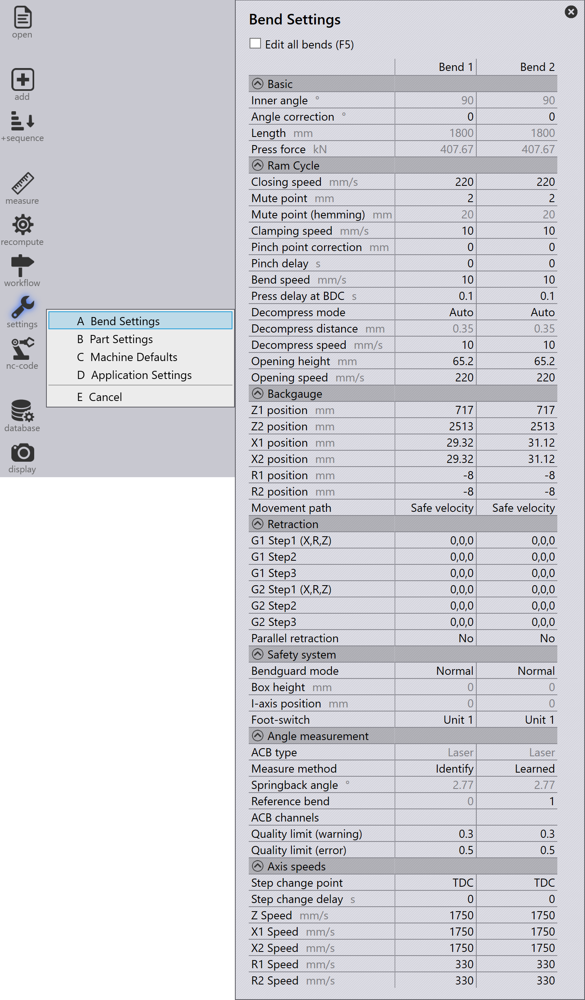

Tabulka ohybů
Podrobné úpravy všech nastavení pro všechny ohyby můžete provést otevřením tabulky Nastavení ohybů. K tomu vyberte ikonu nastavení na panelu nástrojů vlevo a vyberte Nastavení ohybů (nebo použijte klávesovou zkratku T, A).
| Počet sloupců ohybu v Nastavení ohybů závisí na počtu ohybů v ohýbacím dílu. |

Pole |
Popis |
Inner angle |
Vnitřní úhel ohybu. |
Length |
Celková délka ohybu. |
Press force |
Vypočítaná lisovací síla. |
| Pole | Popis |
|---|---|
Closing speed |
Rychlost nosníku až do bodu utlumení. |
Mute point |
V bodě utlumení se maximální rychlost („Rychlý pokles“) automaticky přepne na sníženou rychlost („Upnutí“). Bod utlumení je nad horní hranou dolního nástroje. Programovaný list „Vzdálenost bodu utlumení 1“ tloušťka = vzdálenost mezi špičkou horního nástroje a horní hranou dolního nástroje. |
Clamping speed |
Rychlost nosníku mezi bodem utlumení a upínacím bodem. |
Clamping point correction |
Upravte hodnotu tak, aby kompenzovala rozdíly v tloušťce plechu. |
Pinch delay |
Zpoždění je většinou vyžadováno automatizovanými stroji. Během čekacího času se nosník zastaví v upínacím bodě. |
Bend speed |
Rychlost nosníku během ohýbání. |
Press delay at BDC |
Paprsek zůstane po tuto dobu v dolní úvrati. |
Decompress distance |
Díky expanzní dráze se napětí v rámu stroje po ohybu uvolňuje kontrolovaným způsobem, protože v dolní úvrati (LDP) je pod maximálním napětím. Expanzní dráha posouvá nosník nahoru pomalou rychlostí. |
Decompress speed |
Rychlost nosníku podél expanzní dráhy (dekomprese). |
Opening height |
Rozevření lisovacího beranu je míra, o kterou se
nosník posune nahoru po procesu ohýbání. |
Opening speed |
Rychlost nosníku za expanzní dráhou (dekomprese). |
| Pole | Popis |
|---|---|
Retract direction |
Zde vyberete, kterým směrem se má dorazový palec vysunout. |
Retraction 1 a Retraction 2 |
Vzdálenosti, o které se dorazy 1 a 2 vzdálí od polohy dorážení po upnutí dílu. |
Z1 position |
Poloha Z dorazu 1 |
Z2 position |
Poloha Z dorazu 2 |
X1 position |
Poloha X dorazu 1 |
X2 position |
Poloha X dorazu 2 |
R1 position |
Poloha Z dorazu 1 |
R2 position |
Poloha Z dorazu 2 |
Z Speed |
Rychlosti dorazů v Z |
X1 Speed |
Rychlost dorazu 1 v X |
X2 Speed |
Rychlost dorazu 2 v X |
R1 Speed |
Rychlost dorazu 1 v R |
R2 Speed |
Rychlost dorazu 2 v R |